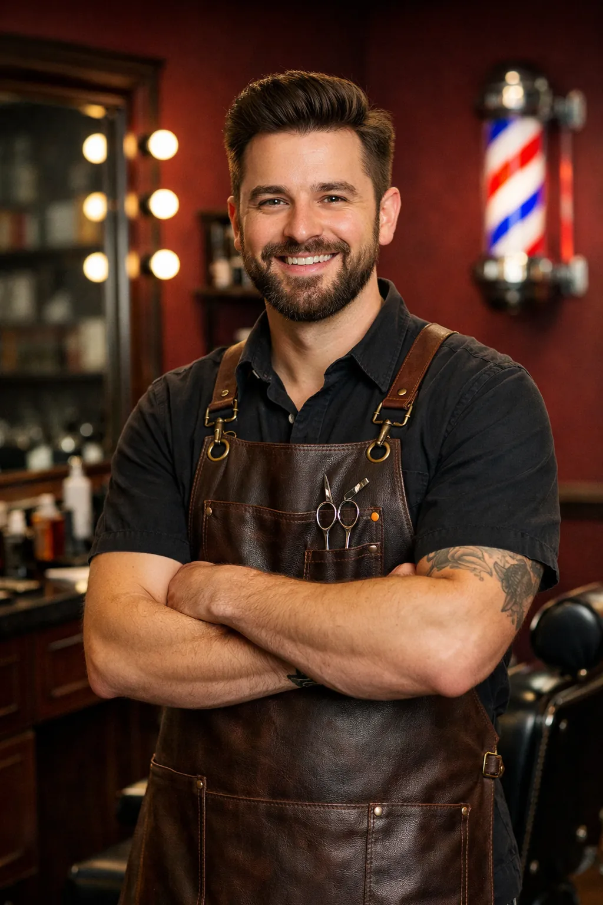
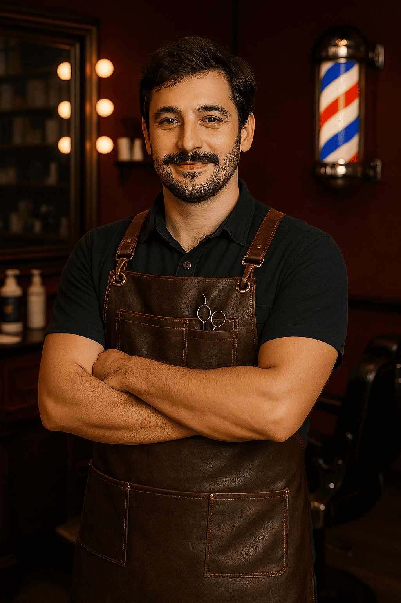
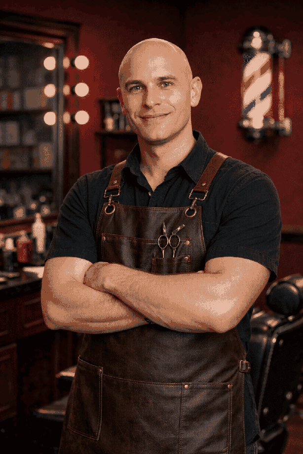

Timur
Timur on alalla pitkään toiminut parturi. Häneltä löytyy työvuosia 10 vuotta, joten hänen taidot eivät varmasti jätä ketään kylmäksi.
Timur on erikoistunut old fashion -tyyleihin.
Proper Barber aloitti toimintansa vuonna 2020, kun kaveriporukka huomasi ongelman, joka oli nousussa parturialalla. Monissa liikkeissä keskityttiin vain trendikkäisiin malleihin, kuten fadeihin, croppeihin ja muihin somehitteihin, mutta perinteinen, yksilöllinen parturityö jäi taka-alalle.
Kokosimme yhteen vuosien kokemuksen, klassiset tekniikat ja modernin viimeistelyn. Näin syntyi Proper Barber, paikka, jossa asiakas ei ole muotti, vaan yksilö. Meille tärkeintä ei ole mikä on trendissä, vaan mikä sopii sinulle.
"Make every guest feel like they're the only guest."
-Paul Mitchell

Timur on alalla pitkään toiminut parturi. Häneltä löytyy työvuosia 10 vuotta, joten hänen taidot eivät varmasti jätä ketään kylmäksi.
Timur on erikoistunut old fashion -tyyleihin.

Yahir on aloittanut parturoinnin jo lapsena. Hänen taitoja on palkittu maailmanluokan parturointikisoissa.
Yahir on erikoistunut pitkiin hiuksiin.

Franz aloitti Proper Barberissa harjoittelijana vuonna 2021.
Franzin erikoisalaa ovat nuorten trendikkäät leikkaukset kuten fadet ja mulletit.

Johan on vaikuttanut tällä alalla jo 15 vuotta. Johan opiskeli parturiksi Ranskassa.
Johanin erikoisalaa ovat parran muotoilu sekä klassiset hiustyylit.